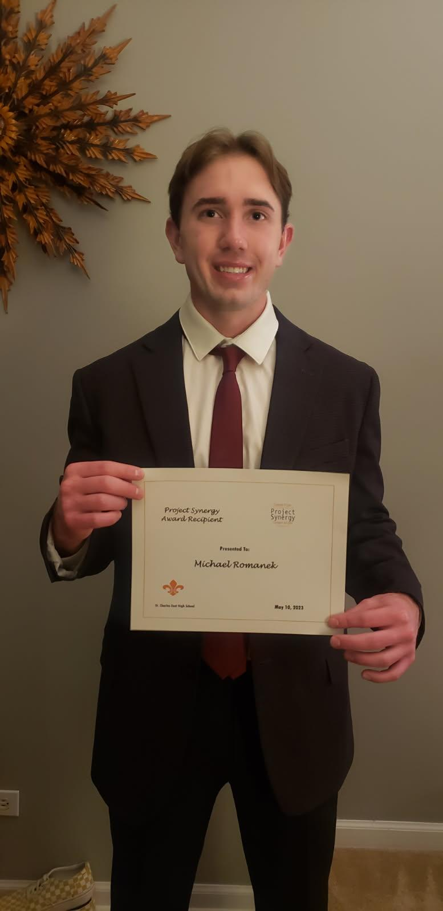
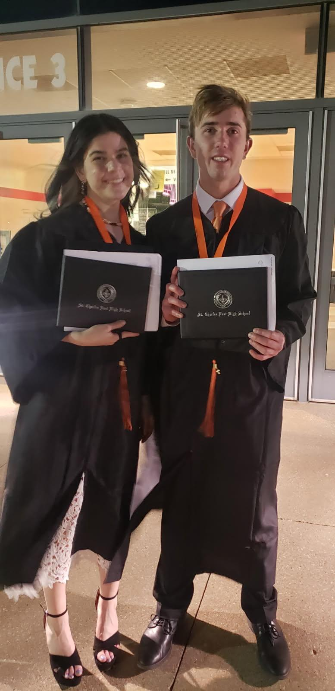

Researcher. Designer.
Field-Tested.
Who I Am

I'm a 3rd-year User Experience Engineering student at Milwaukee School of Engineering, also completing a certificate in AI for Emerging Applications with a medical imaging focus. My work sits at the intersection of rigorous research and human-centered design — I believe the best product decisions start with going directly to the user.
My Eagle Scout background, entrepreneurial experience, and academic research projects have shaped a research mindset that's equally comfortable in a structured lab setting and in the field.
I'm currently seeking UX Research internships and consulting opportunities where rigorous methodology actually shapes what gets built.
Creative Proficiencies
Professional & Personal Achievements
Eagle Scout — Boy Scouts of America

Reached the rank of Eagle Scout after 13 years in Troop 13, Three Fires Council. Served as Quartermaster, completed a 14-day high-adventure trip to Philmont National Scout Reservation, and mentored younger scouts throughout.
Scouting built leadership, teamwork, responsibility, and character — and community service as a lifelong practice. My Eagle Scout project required planning, coordinating volunteers, managing a budget, and leading a crew over nearly a year.
Project Synergy — PLTW Engineering Program
Elected into the school engineering program where I studied multiple engineering disciplines, built functional robots from VEX parts, and completed solo and team design projects. Developed leadership, communication, and professional skills recognized with a program achievement award.


Academic Background
Milwaukee School of Engineering
Currently a 3rd-year student pursuing a B.S. in User Experience Engineering alongside a certificate in AI for Emerging Applications (Medical Imaging focus). Relevant coursework: UX Research, Design for Chat & Voice, Human-Centered AI, Inclusive Design, Interaction Design, Psychology of Design, Machine Learning.
St. Charles East High School
Graduated from the Design, Media, and Communications academy focused on Media and Digital Experience. Earned Global Scholars certification. Senior year: full 8-hour schedule with 4 AP classes while managing a part-time job and extracurricular activities.

Activities & Interests
High Power Rocketry Club
Lead UX Designer creating the club website and logo, leading cross-functional design collaboration and accessibility evaluation at MSOE.
Fishing
One of my favorite ways to reconnect with the physical world — helps me slow down, think, and reflect. Some of my best thinking happens on the water.
Baseball
Developed teamwork, time management, and communication through years of competitive baseball.
Disc Golf
A regular outlet for competition and time spent with friends and family.
Religious Volunteering
Throughout the year I participate in community service: cooking meals for the underprivileged, making gifts for the elderly, and seed packing.